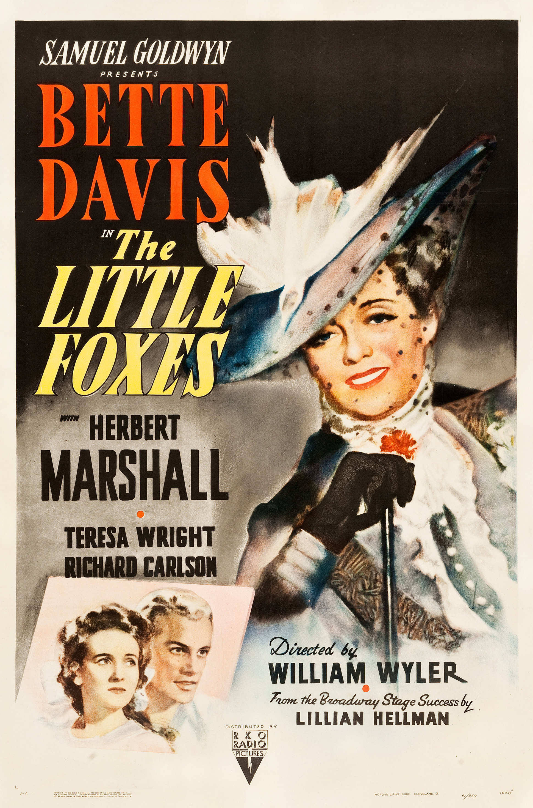

The Little Foxes
14th Academy Awards
(Oscars 1942)
9 Nominations, 0 Awards
| Nominations | ||
|---|---|---|
| Category | Nominees | Result |
| Outstanding Motion Picture | Samuel Goldwyn Productions | Nominated |
| Actress | Bette Davis | Nominated |
| Actress in a Supporting Role | Patricia Collinge | Nominated |
| Actress in a Supporting Role | Teresa Wright | Nominated |
| Directing | William Wyler | Nominated |
| Writing (Screenplay) | Lillian Hellman | Nominated |
| Film Editing | Daniel Mandell | Nominated |
| Art Direction (Black-and-White) | Howard Bristol and Stephen Goosson | Nominated |
| Music (Music Score of a Dramatic Picture) | Meredith Willson | Nominated |